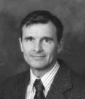

RANDALL D. MILLER
English Department
Ricks College
Rexburg, Idaho 83460
CONTENTS
VIEWPOINT
BIOGRAPHICAL
DATA
PUBLICATIONS
The foundation for all learning is faith in and a testimony of God, the Father, his Son, Jesus Christ, as our savior, and the Holy Ghost, and a testimony that the gospel of Christ has been restored to the earth and that the Book of Mormon along with the Bible is a divinely inspired testament of Christ.
That faith and testimony and the knowledge that we are children of God who may become "heirs of God, and joint-heirs with Christ," give purpose and direction to all our endeavors, including our teaching and learning (Romans 8:17).
Reading and writing are key to both our secular and spiritual learning and teaching. Writing and reading enable us to succeed in secular endeavors such as career and community service and can help exalt us eternally.
Although historical and scientific theorists claim that language and writing evolved, the scriptures attest to the fact that man was given language and writing from the beginning. Adam was commanded to keep a book of remembrance (Moses 6:5).
Since the beginning, people have recorded their thoughts, their learning, their life's events and God's dealings with them. Writing can and should serve the same purpose for each of us. It will be a valuable and often necessary tool in almost any career. It will be useful in fulfilling Church callings. It will aid in personal development, helping us explore ideas and ourselves. It will help us learn and preserve our learning. It will provide a means to record God's dealing with us.
As Saints, we must be well read. To fulfill our covenant obligations we must "study and learn, and become acquainted with all good books" (D&C 90:15). We are under obligation to seek out truth wherever it may be found, reading science, history, biography, fiction (with the words of the prophets as the standard against which we measure all our learning). Because reading runs another's thoughts through our minds adding to our enjoyment, to our learning, and to our growth (or, on the negative side, to our destruction), we must be wise in our choice of what to read. We must hold our reading to the highest intellectual, moral and artistic standards, remembering that "if there is anything virtuous, lovely, or of good report or praiseworthy, we seek after these things" ("The Articles of Faith" #13). Especially when we read for relaxation, we should choose wisely. We should separate ourselves from an inappropriate book just as we would from an inappropriate or demeaning or degrading friendship. We choose what to like and we can change our liking.
RANDALL D. MILLER - BIOGRAPHICAL DATA:
EXPERIENCE
1967-Present
Teacher, English Department
Ricks College, Rexburg, Idaho
Freshman Composition, Advanced
Composition, American Literature,
Introduction to Literature, Book of Mormon
1977-87
Chairman, Division of Arts and Letters
Ricks College, Rexburg, Idaho
Administrative responsibility for
seven departments, fifty-seven faculty members
1971-72
Teaching Assistant, English Department
Brigham Young University, Provo, Utah
1966-67
Teaching Assistant, English Department
Utah State University, Logan, Utah
EDUCATION
1971-72
Completed course work for Ph.D. in English at Brigham Young
University,
Provo, Utah
1966, 1967
B.A. & M.A. in English, Utah State University, Logan, Utah
CAMPUS ASSIGNMENTS
1995-Present
Chairman, Thomas E. Ricks Associates and Distinguished Teaching
Awards Committees
1995-1998
Book Review Editor, New Perspectives
1988-91
Member, Standards Committee
1978 & 1986
Member, Presidential Inauguration Committee
1975-76
Chairman, General Education Subcommittee on Communications Skills
1971
Member, Campus Evaluation Committee - Environment
PROFESSIONAL DEVELOPMENT TRAVEL & STUDY
1999 Mesoamerica
Reading and travel relating to ancient American ruins and Mexican
history.
1994 New England and Mid-Atlantic States
Read the works of several American authors and visited sites
relevant to them and their writings. Also visited U.S. and L.D.S. historical sites.
1988 England, France and Germany
Read the works of several English authors, visited sites relevant
to them and their writings and attended a Shakespeare play in Stratford and a musical
based on T. S. Eliot's poetry.
WRITING AND PROFESSIONAL PAPERS
2000 "From the Bottom of the Chain." Perspective. Fall 2000, 31.
"Jack London's Religion: An Examination of the Basic Beliefs Evident in his Writings." Perspective. Fall 2000, 90-94.
1999 "For Love of Nature and of Words." Impact. March 1999, 3-4.
1998 Writing by Choice: A Concise Guide to a Writer's Choices. Rexburg, Idaho. Ricks College Press.
"Melville's Billy Budd as Parable." unpublished essay.
1997 "Editorial." New Perspectives November 1997, inside cover.
1996 "In Good Faith." Impact. December 1996, 1-2.
1995 "Response to Comments Heard in the Smith Annex." Impact. English Department, Ricks College.
"Great Is the Mystery of Godliness--A Response to Richard Dawkins: The Blind Watchmaker." New Perspectives April 1995, 52-54.
"Summary of a Scholarly Article." Impact. English Department, Ricks College.
1994 Writing by Choice. (College writing text) Rexburg, Id.: Ricks College Press.
1993 "Teaching Figurative Language for Reading and Writing." Impact. English Department, Ricks College.
1992 "Mormon: A Writer Sober and Quick." New Perspectives December 1992, 25-27.
"A Wise Child Knows Its Father." (Book Review) New Perspectives December 1992, 44.
"Traveling in England." New Perspectives April 1992, 26.
1991 "Opposition: The Fall and the Atonement." New Perspectives December 1991, 33-35.
"The News That's Fit." Impact November 1991. 6-8.
1989 "Letter." Newsweek. 4 December 1989, 26.
Comprehensive Self-Study. (Writer/Editor) Rexburg: Ricks College. (Submitted as part of the college accreditation review.)
1987 Writing As Unconscious Act. Freshman Writing Text. Rexburg: Ricks College Press.
"Right-Brain Skills Applied to Writing." Accepted for presentation at the Pacific Northwest Regional English Conference and at the Wyoming Conference on English.
1986 "Letter." Christian Science Monitor 28 May 1986, 15.
1984 "Successful Business Practices Applied to the Teaching of Writing." presented at the annual meeting of the Pacific Northwest Regional Conference on English in the Two-Year College (Spokane, Washington, October 18-20, 1983).
1983 "Inner Tennis Principles Applied to Writing." ERIC Clearing House on Reading and Communication Skills, 1983 - Abstract printed in October 1983 issue of Resources in Education.
"Inner Tennis Principles Applied to Writing." presented at the annual meeting of the Conference on College Composition and Communication (Detroit, Michigan, March 17-19, 1983).
1982 "The Job Interview: Preparation and Success/Writing Letters and Resumes That Get Jobs." Presentation with William Conway at the annual meeting of the Pacific Northwest Regional Conference on English in the Two-Year College (Salem, Oregon, October 14-16, 1982).
1981 "The Ricks College Humanities Program." presented at the annual meeting of the Pacific-Western Division of the Community College Humanities Association (Inglewood, California, April 24-25, 1981).
1980 "Good Education Includes More Than Career Planning." Scroll 4 November 1980.
"A Home Away From Home." Scroll 9 January 1980.
The Summer's Over. Unpublished five-act play.
1979 "Symphony Orchestra, Drama Productions, Unique at Ricks." The Post Register 9 August 1979.
Comprehensive Self-Study. (Writer/Editor) Rexburg: Ricks College. (Submitted as part of the college accreditation review.)
"The Popular Disease." Scroll 28 November 1979.
"Zen and Motorcycles." Reflections. English Department, Ricks College.
"Shall We Parce? Or What Class Is This?" Reflections. English Department, Ricks College.
1977 "How to Keep Schoolwork from Interfering with Education." New Perspectives 8 April 1977, 5-6.
1976 "Report of the General Education Subcommittee on Communication Skills." Rexburg: Ricks College.
1972 "Emerson, Wordsworth and Nature." Perspectives Provo: BYU College of Humanities Journal.
CAMPUS CHURCH ASSIGNMENTS
15 years service: Clerk, Bishop's Counselor, High Councilor, Bishop, Stake Executive Secretary